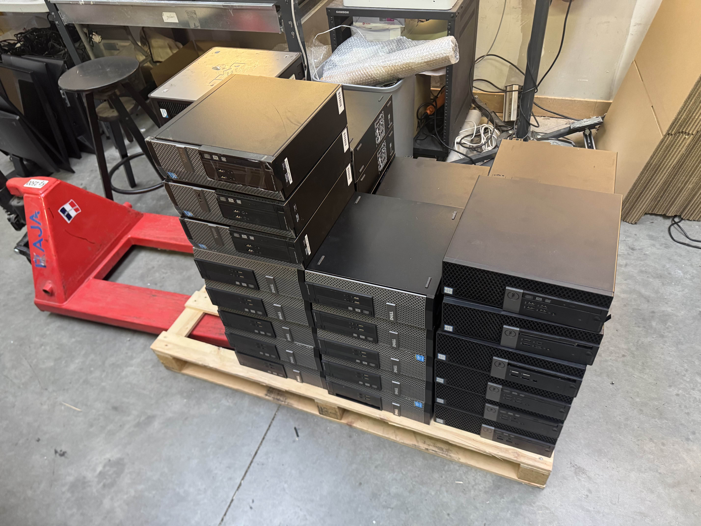
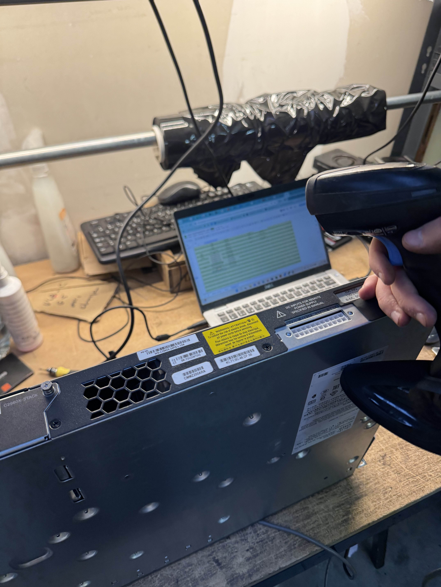
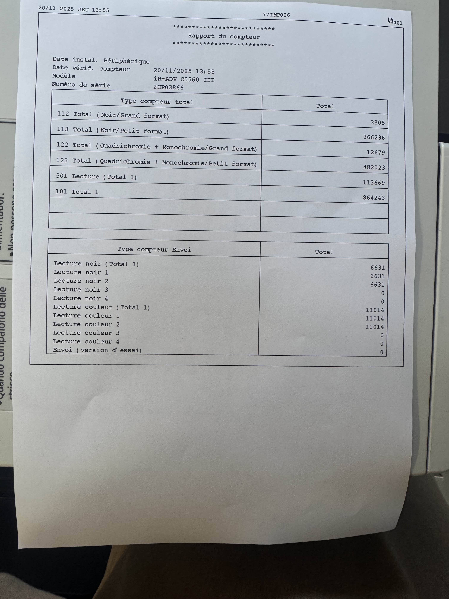
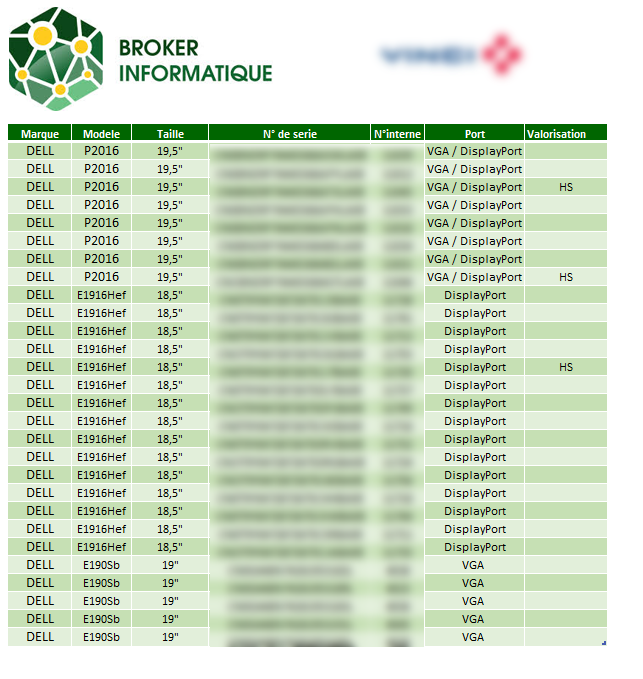
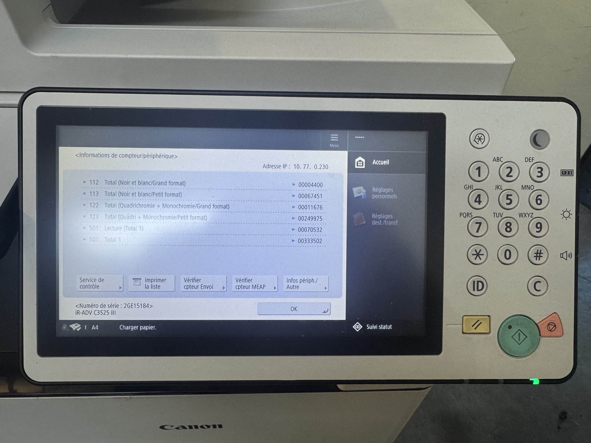
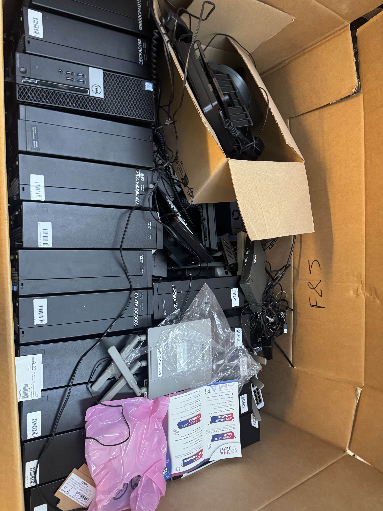
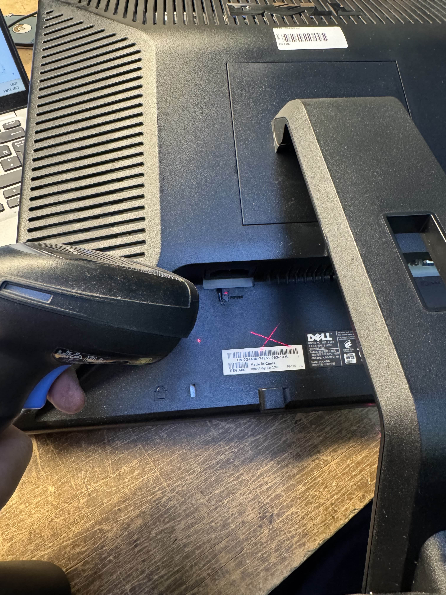
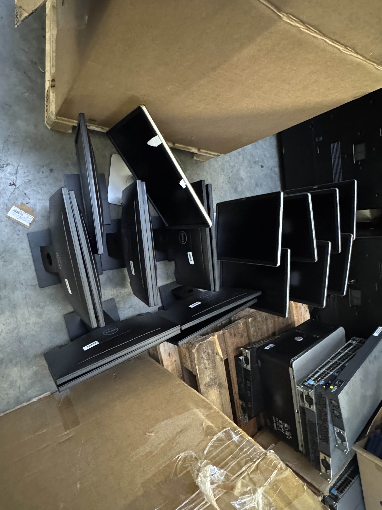

1. Contexte
J’ai réalisé cette situation professionnelle lors de mon stage chez Broker Informatique, une entreprise spécialisée dans la récupération et la revalorisation de matériel informatique. Cette situation s’est déroulée dans les locaux de l’entreprise, pendant ma période de stage.
Lors de mon stage, l’entreprise a reçu plusieurs palettes de matériel informatique provenant d’un client (équipement réseau, écrans, ordinateurs, imprimantes). Avant de pouvoir recycler ou revendre ces équipements, il était nécessaire de réaliser un inventaire complet et d’évaluer leur état.
2. Problématique
- Réaliser un inventaire précis du matériel reçu
- Vérifier l’état et le fonctionnement des équipements
- Identifier les éléments reconditionnables, recyclables ou revendables
- Fournir un audit clair et exploitable pour l’entreprise et le client
3. Réalisation
Étape 1 – Identification du matériel
- Tri des équipements reçus
- Classification par type : écrans, PC, imprimantes, réseau
- Organisation de l’espace de travail

Étape 2 – Collecte des informations
- Relevé des marques, modèles et numéros de série
- Utilisation d’un scanner code-barres
- Vérification des caractéristiques techniques

Étape 3 – Vérification du matériel
- Tests d’allumage
- Contrôle visuel de l’état général
- Identification du matériel fonctionnel ou HS

Étape 4 – Création du fichier d’inventaire
- Saisie des données dans Excel
- Structuration du tableau
- Préparation du fichier pour l’équipe

5. Résultats
Le fichier d’inventaire a permis d’identifier rapidement le matériel fonctionnel et hors service. Il a été utilisé par l’entreprise pour l’audit du parc client et pour le suivi du matériel destiné à la revente ou au recyclage.
6. Pistes d’amélioration
7. Compétences mobilisées
9. Images du projet



